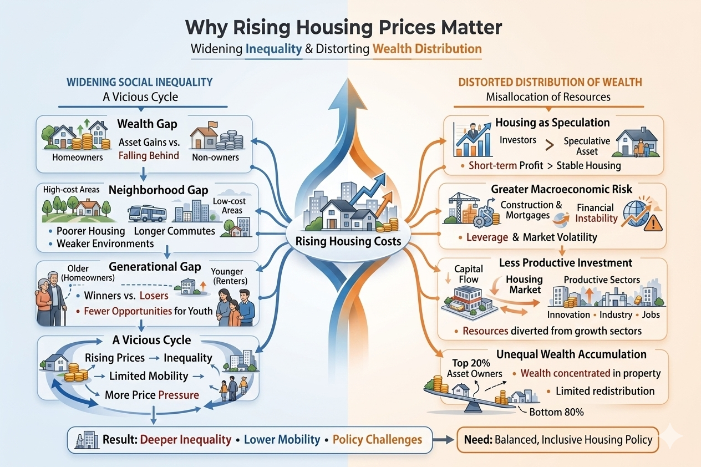

🔍 Background
Why We Chose This Topic
Understanding the motivations and urgency behind studying Seoul's housing price inequality.
1. Why Seoul?
Housing in Seoul has become more than a market issue. Over the past decade, both home prices and rents have risen rapidly, placing growing pressure on households and reshaping how people experience the city.
Compared with other major global cities, housing prices in Seoul have increased at an exceptionally fast pace. This rapid growth has intensified concerns about housing affordability and economic inequality.
Last updated: January 2026
However, the issue is not only how fast prices are rising. Even within Seoul, housing price growth has not been evenly distributed. Some districts have experienced dramatic increases, while others have grown much more slowly. This widening spatial gap suggests that housing inequality is not only a national phenomenon but also an urban one.
Data coverage: Up to 2025
2. Why Is It an Important Issue in Society?
Housing costs influence far more than where people live. They affect commuting time, access to education, neighborhood safety, and the quality of everyday urban life.
In this sense, housing inequality is both social and economical problem in the Korean context.
From a socioeconomic perspective, rising housing prices reinforce inequality through multiple channels. As asset values increase, homeowners accumulate wealth while non-owners fall further behind, widening the wealth gap. At the same time, spatial inequality intensifies as lower-income households are pushed toward less accessible and lower-quality neighborhoods, leading to longer commutes and reduced access to education and opportunities. These dynamics create a generational divide, where younger and future households face declining upward mobility. As inequality deepens, social mobility becomes more constrained, feeding back into further disparities in housing access and outcomes.
From a macroeconomic perspective, rising housing costs distort the allocation of capital and increase systemic risk. As housing becomes a speculative asset, investment shifts away from productive sectors such as innovation and industry, weakening long-term economic growth. At the same time, higher leverage in housing markets increases financial vulnerability and amplifies market volatility. These structural distortions reinforce wealth concentration and reduce the economy’s overall efficiency. Together, these socioeconomic and macroeconomic mechanisms form a self-reinforcing cycle, where rising housing prices exacerbate inequality and misallocation, which in turn sustain and intensify further increases in housing prices.

How rising housing prices widen inequality and distort the distribution of wealth.
3. What Approach Do We Need?
The Korean government has introduced many housing policies, often focusing on increasing supply or reducing speculative demand.
However, these policies may not fully explain why housing prices grow faster in some districts within the same city.
This project explores whether urban amenities such as transportation, education, safety, and green space help explain district-level differences in housing price growth across Seoul.
← Go back